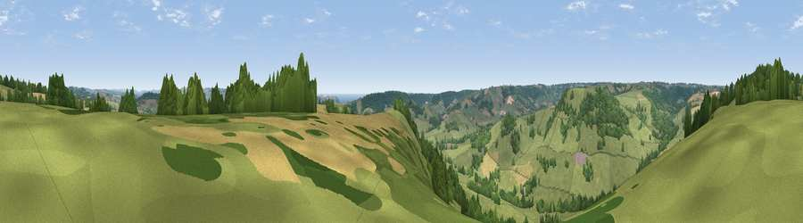

Viewpoint near Northleigh
#17008 in England · top 35% of its area beats it · near Northleigh · access?Where it is
The exact computed spot (SY 21875 96925). Click the marker for map links.
Public access: no public right of way or access land is recorded at this exact spot — it may be on private land. Computed from Natural England's CRoW access layer and OpenStreetMap rights of way — not the legal definitive map. Always verify locally.
The view, rendered

A 360° render of this exact spot computed from the terrain model, tree cover and land cover — summer colours, afternoon light, calibrated against photographs of famous viewpoints. Real trees, hedges and buildings will differ in detail.
The panorama
Grey silhouette: terrain skyline in each direction (720 bearings, Earth curvature and refraction included). Dashed green: skyline with trees (+15 m) and buildings (+8 m) as obstacles. Blue strip: how far the ground is visible on each bearing.
Where the view opens
Wedge length = distance to the farthest visible ground on that bearing (vegetation-aware). Rings at 10, 25 and 50 km.
What fills the view
60% grassland · 30% woodland · 10% cropland ·
Angular shares of the visible panorama (visual magnitude), not map area. Landscape diversity 0.41 (0–1 Shannon).
Key numbers
More beautiful places nearby
The staircase of upgrades: each row has a higher view potential than everything closer. Driving times are estimates from straight-line distance, calibrated against real road routing — check an actual route before setting out.
| Place | Direction | Drive | Score |
|---|---|---|---|
| Viewpoint near Northleigh | SE · 1 km | ~2 min | 57.4 |
| Widworthy Hill | N · 2 km | ~5 min | 64.6 |
| Viewpoint near Seaton | SSE · 6 km | ~13 min | 67.3 |
| Viewpoint near Axmouth | SE · 7 km | ~15 min | 73.4 |
| Viewpoint near Branscombe | S · 9 km | ~17 min | 80.5 |
| Viewpoint near Branscombe | SSW · 10 km | ~19 min | 81.0 |
| Viewpoint near Axmouth | SE · 10 km | ~19 min | 82.4 |
| Viewpoint near Sidmouth | SW · 15 km | ~27 min | 83.0 |
50.76663, -3.10917 · source: screening · position refined by local search. Computed location — check access rights before visiting.